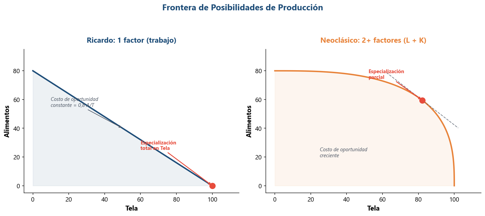
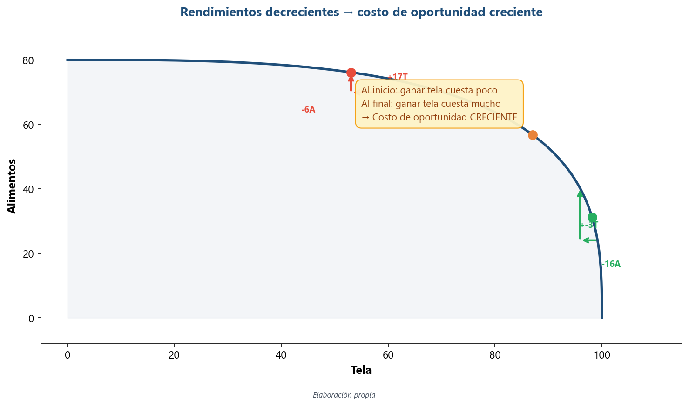
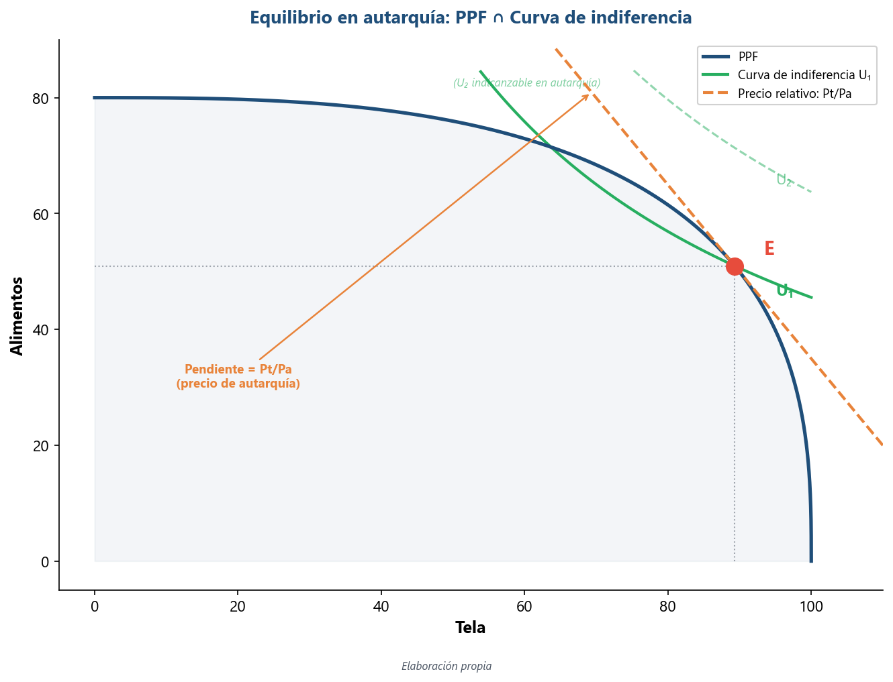
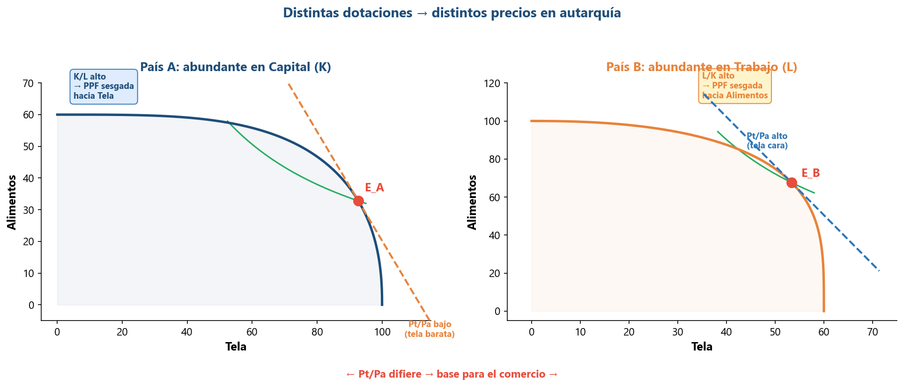
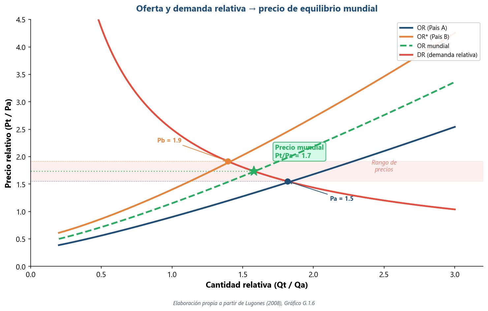
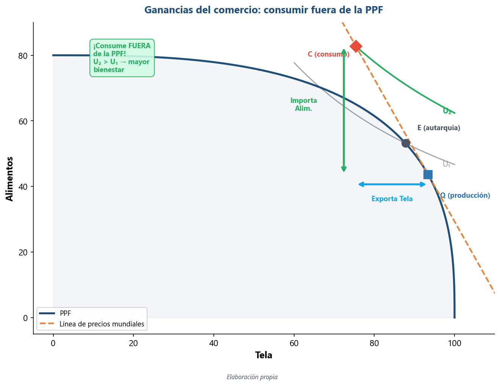

Economía Internacional — Clase 5
El modelo neoclásico estándar: dotaciones y precios relativos
UMET - Licenciatura en Economía | 2026
Repaso rápido: ¿qué sabemos hasta acá?
- Smith: el comercio amplía el mercado → más especialización → más productividad
- Ricardo: ventaja comparativa por costos relativos (no absolutos) → ambos ganan
- Herramienta: PPF lineal, 1 factor (trabajo), especialización total
- Pero: ¿de dónde sale la diferencia de tecnología? ¿Quién gana y quién pierde dentro del país? ¿La especialización es siempre total?
Agenda: el modelo neoclásico estándar
- ¿Qué limitaciones tiene Ricardo? Las preguntas que dejó abiertas
- Contexto histórico: la revolución marginalista y el entreguerras
- La tríada tecnología-poder-comercio en el período neoclásico
- El salto técnico: de 1 factor a 2 → la PPF se curva
- Equilibrio en autarquía: curvas de indiferencia y precios relativos
- Del equilibrio interno al comercio: especialización parcial y ganancias
- Resumen: Ricardo vs modelo neoclásico estándar
Cinco limitaciones del modelo ricardiano
Un motor potente... pero incompleto
- 1 solo factor (trabajo): no hay capital, ni tierra, ni trabajo calificado vs no calificado → no puede hablar de distribución del ingreso
- PPF recta: costo de oportunidad constante → especialización siempre total (todo o nada)
- Tecnología diferente entre países: ¿por qué? Ricardo no lo explica — la toma como dada
- Sin preferencias: los consumidores no aparecen, no hay oferta ni demanda — solo costos
- Mundo de 2×2×1: dos países, dos bienes, un factor. ¿Qué pasa con más factores, más bienes, más países?
La revolución marginalista (1870s): un cambio de paradigma
De Smith y Ricardo a una nueva forma de pensar la economía
- 1871-1874: tres autores publican casi al mismo tiempo ideas similares: Jevons (Inglaterra), Menger (Austria), Walras (Suiza)
- Cambian el eje del análisis: de clases sociales (renta, salarios, ganancias) a individuos que eligen en el margen
- Del valor-trabajo (el valor de un bien depende del trabajo para producirlo) al valor-utilidad (depende de cuánto lo valora el consumidor)
- Nueva herramienta: equilibrio general — todos los mercados se determinan simultáneamente
- En comercio internacional: se puede reformular la ventaja comparativa sin depender de la teoría del valor-trabajo
Gottfried Haberler (1900-1995): la PPF sin valor-trabajo
El puente técnico de Ricardo al modelo neoclásico
- Economista austríaco, formado en Viena con Mises y Hayek. Emigra a EEUU (Harvard, 1936)
- Obra clave: The Theory of International Trade (1936)
- Contribución fundamental: reformula la frontera de posibilidades de producción usando costos de oportunidad, sin necesitar la teoría del valor-trabajo
- Esto permite: múltiples factores de producción → la PPF se curva → especialización parcial
- Haberler construye la caja de herramientas que después usarán Heckscher, Ohlin, Samuelson
Contexto: las teorías nacen en un mundo convulsionado
1919-1939: proteccionismo, crisis y colapso del comercio
- 1914-1918: la Primera Guerra Mundial destruye la primera globalización
- 1919: Heckscher publica su artículo seminal sobre dotaciones y comercio
- 1929-1930: crisis financiera → Smoot-Hawley (EEUU sube aranceles a niveles récord) → guerra comercial global
- 1933: Ohlin publica Interregional and International Trade en plena Gran Depresión
- 1936: Haberler reformula la PPF → el modelo estándar toma forma mientras el comercio mundial se desploma
- Paradoja: las teorías que justifican el libre comercio se escriben en la época de mayor proteccionismo del siglo XX
La tríada en el período neoclásico
¿Qué cambia en cada pilar respecto de Ricardo?
- Tecnología: el modelo neoclásico ASUME que es igual entre países. Gran cambio: si todos tienen la misma tecnología, la ventaja comparativa viene de OTRO lado → dotaciones de recursos
- Poder: la hegemonía británica se derrumba, EEUU asciende pero no lidera aún. Vacío de poder → proteccionismo, guerras comerciales, colapso del patrón oro
- Comercio: las reglas se quiebran. No hay orden multilateral (la OMC no existe hasta 1995, el GATT recién en 1947). Cada país pone aranceles como quiere → el comercio se desploma
- Implicancia política del modelo: si la ventaja viene de dotaciones "naturales" (tierra, capital, trabajo), la especialización parece inevitable — argumento potente para el libre comercio
¿Qué cambia cuando hay más de un factor?

Fuente: Elaboración propia
- Ricardo (1 factor): costo de oportunidad constante → PPF recta → especialización total
- Neoclásico (2+ factores): costo de oportunidad creciente → PPF cóncava → especialización parcial
- Razón: al reasignar recursos, los factores no son igualmente productivos en ambos bienes
- La PPF curva refleja que cada unidad adicional del bien cuesta más que la anterior
Rendimientos decrecientes: la razón técnica de la PPF curva

Fuente: Elaboración propia
- Con 1 factor: reasignar trabajo de vino a tela tiene siempre el mismo costo
- Con 2 factores: vino usa mucho trabajo, tela usa mucho capital. Al mover recursos de vino a tela, los primeros trabajadores se adaptan bien, pero después hay desajuste: sobra capital, falta trabajo especializado
- Rendimientos decrecientes: cada unidad adicional de un factor aporta menos producción → costo de oportunidad creciente
- Resultado: la PPF se "infla" hacia adentro → forma cóncava
Los supuestos: ¿en qué mundo estamos?
Un modelo 2 × 2 × 2
- 2 países (A y B), 2 bienes (tela y alimentos), 2 factores (trabajo L y capital K)
- Misma tecnología en ambos países (mismas funciones de producción)
- Rendimientos decrecientes en cada factor
- Competencia perfecta en todos los mercados (bienes y factores)
- Factores móviles entre sectores dentro del país, pero inmóviles entre países
- Mismos gustos en ambos países (mismas curvas de indiferencia)
- Sin costos de transporte ni barreras al comercio
- La única diferencia entre países: distinta dotación relativa de factores (K/L)
Lo que faltaba en Ricardo: las preferencias de los consumidores

Fuente: Elaboración propia
- Curva de indiferencia: todas las combinaciones de bienes que dan la misma utilidad al consumidor
- Más alejada del origen = mayor bienestar
- Equilibrio en autarquía: el punto donde la PPF es tangente a la curva de indiferencia más alta posible
- En ese punto de tangencia, la pendiente de la PPF = pendiente de la curva de indiferencia = precio relativo de equilibrio
- Cada país maximiza bienestar dado lo que puede producir
Distintas dotaciones → distintos precios en autarquía

Fuente: Elaboración propia
- País A: abundante en capital → PPF sesgada hacia tela (intensiva en K) → precio relativo de tela bajo en autarquía
- País B: abundante en trabajo → PPF sesgada hacia alimentos (intensivos en L) → precio relativo de tela alto en autarquía
- Misma tecnología, mismos gustos → la diferencia de precios viene SOLO de las dotaciones
- Si los precios relativos difieren en autarquía → hay incentivos para comerciar (igual que en Ricardo, pero por otra razón)
¿Cómo se determina el precio relativo en autarquía?
El precio es donde la oferta (PPF) se encuentra con la demanda (preferencias)
- En el punto de tangencia: \(TMT = TMS = P_T / P_A\)
- TMT (Tasa Marginal de Transformación): pendiente de la PPF = cuántos alimentos sacrifico por 1 tela más (lado de la producción)
- TMS (Tasa Marginal de Sustitución): pendiente de la curva de indiferencia = cuántos alimentos estoy dispuesto a ceder por 1 tela más (lado del consumo)
- Precio relativo: cuando TMT = TMS, el mercado está en equilibrio
- Cada país tiene su propio precio de autarquía → si difieren → base para el comercio
¿Cómo se determina el precio mundial?

Fuente: Elaboración propia a partir de Lugones (2008), Gráfico G.1.6
- Oferta relativa (OR): cuánta tela vs alimentos produce el mundo a cada precio relativo. Pendiente positiva: si sube el precio de la tela, se produce más tela
- Cada país tiene su propia OR (según dotaciones) → OR y OR*
- Demanda relativa (DR): cuánta tela vs alimentos quiere consumir el mundo. Pendiente negativa: si sube el precio de la tela, se consume menos tela
- DR mundial es única (mismos gustos en ambos países)
- Precio de equilibrio mundial: donde OR mundial cruza DR → punto intermedio entre precios de autarquía
Ganancias del comercio: consumir fuera de la PPF

Fuente: Elaboración propia
- Autarquía: producción = consumo en el punto E (tangencia PPF + CI)
- Con comercio: nuevo precio relativo mundial (distinto al de autarquía) → el país ajusta producción hacia el bien donde tiene ventaja
- Produce en Q (sobre la PPF), pero consume en C (sobre la línea de precios mundiales, fuera de la PPF)
- La diferencia entre Q y C es lo que exporta e importa
- Resultado: el país alcanza una curva de indiferencia más alta → mayor bienestar
El anticipo de Heckscher-Ohlin
La dotación de factores como fuente de ventaja comparativa
- En el modelo estándar, la forma de la PPF depende de las dotaciones de factores (cuánto K y L tiene el país)
- País abundante en capital → PPF sesgada a tela → tela barata → exporta tela
- País abundante en trabajo → PPF sesgada a alimentos → alimentos baratos → exporta alimentos
- Predicción: cada país exporta el bien que usa intensivamente su factor abundante
- Esto es la intuición central del modelo Heckscher-Ohlin → Clase 6
Tabla comparativa: ¿qué cambia?

Fuente: Elaboración propia
- Factores: Ricardo = 1 (trabajo) → Neoclásico = 2+ (trabajo + capital)
- PPF: Ricardo = recta → Neoclásico = curva (cóncava)
- Costo de oportunidad: Ricardo = constante → Neoclásico = creciente
- Especialización: Ricardo = total → Neoclásico = parcial
- Fuente de ventaja comparativa: Ricardo = tecnología → Neoclásico = dotaciones
- Preferencias: Ricardo = no importan → Neoclásico = curvas de indiferencia
- En común: precios relativos diferentes → comercio → ganancias para ambos
Después del recreo: ¿quién gana y quién pierde?
Heckscher-Ohlin, Stolper-Samuelson y la paradoja de Leontief
- Hasta acá armamos la caja de herramientas (PPF curva, preferencias, oferta/demanda relativa)
- Después del recreo: le ponemos contenido con el modelo H-O
- Tres preguntas que vamos a responder:
- ¿Qué predice H-O sobre el patrón de comercio?
- ¿Quién gana y quién pierde dentro del país? → Stolper-Samuelson
- ¿Los datos confirman el modelo? → Paradoja de Leontief
Material complementario
Para profundizar los temas de esta clase
- 🎬 Juego sin límites: La mentira del libre comercio (DW Documental, 42 min, español) — Cómo funciona realmente el comercio internacional: entre la teoría del libre comercio y la práctica proteccionista
- 🎬 1929: The Great Crash (BBC, 60 min, inglés) — El crack del '29, Smoot-Hawley y el colapso del comercio mundial en los años '30
- 📺 Crash Course Economics #2: Specialization and Trade (YouTube, 11 min, inglés con subs) — Ventaja comparativa, costo de oportunidad y PPF explicados con animaciones
- 🎥 Ferris Bueller's Day Off — La escena de Ben Stein (2 min, YouTube) — "Anyone? Anyone?" La explicación más famosa (y aburrida) de Smoot-Hawley en el cine
- 📺 Marginal Revolution University: Comparative Advantage (YouTube, 8 min, inglés) — Costo de oportunidad y especialización: por qué comerciar siempre conviene
Lecturas para esta clase
Bibliografía del curso
- Lectura principal: Lugones, G. et al. Teorías del Comercio Internacional — Sección 1.2: "Los neoclásicos (Heckscher-Ohlin): diferencias en la dotación de factores" (pp. 25-30)
- Complementaria: Krugman, P., Obstfeld, M. & Melitz, M. Economía Internacional — Cap. 6: "El modelo estándar de comercio"
- Complementaria: Krugman et al. — Cap. 5: "Recursos y comercio: el modelo Heckscher-Ohlin" (anticipar para Clase 6)
¿Preguntas?
Clase 5 — El modelo neoclásico estándar